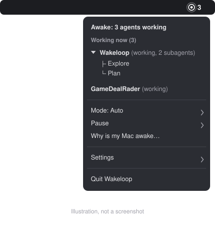

Your Mac stays awake until the agent is done.
Wakeloop is a free menu bar app for macOS. It holds off sleep while a Claude Code session is working and lets go when every session is idle. Start a long task, walk away, and come back to finished work.
Open source under MIT. Needs macOS 13 or later. Supports Claude Code today.
Awake: 2 agents working
A sleeping Mac stalls the agent halfway through.
You start a long refactor in Claude Code and go make dinner. Twenty minutes later the Mac falls asleep and the agent stops mid-task. You come back to half the work.
Running caffeinate keeps the Mac up, but it keeps it up after the agent has finished too. Wakeloop holds the Mac awake only while an agent is busy.
How it works
-
Connect Claude Code
In Settings, choose Set up Claude Code hooks. Wakeloop shows the change, backs up
~/.claude/settings.jsonand adds its own entries. Remove takes them out again. -
The agent works, the Mac stays up
Hooks send a small event to Wakeloop on your own machine when a session starts, gets a prompt, asks for permission or stops. While any session or sub-agent is working, Wakeloop holds a macOS sleep assertion.
-
Sleep comes back on its own
When every session is idle, Wakeloop releases the assertion and your Mac sleeps on its normal schedule. A session waiting on you stays awake for a grace period first, 5 minutes by default.
See which agents are holding your Mac awake
The ring sits calm while nothing is running. When an agent starts, it fills and a bold count of working agents appears beside it. Open the menu to see each project by name, with its sub-agents listed underneath.

What you get
Know what is running
- Working count in the menu barThe number of busy agents, sub-agents included.
- Projects and sub-agentsEach project by name, expandable into its sub-agents.
- Why is my Mac awakeA report of every session, busy process and sleep assertion on the Mac, including ones from other apps.
Stay in control
- Auto, Always on, OffAuto follows your agents. Always on is for things like Remote Control.
- PauseFor 30 minutes, an hour or until 6 a.m. Resume whenever you like.
- Global shortcutsCtrl+Opt+Cmd+P pauses. Ctrl+Opt+Cmd+M cycles the mode.
- A
wakeloopCLIwakeloop hold --for 30mandwakeloop donefor scripts and agents.
Set it up once
- One-click hook setupKeeps your other hooks, saves a backup first and has a Remove button.
- First-run setup guideA short checklist that turns green after your first Claude Code prompt.
- Launch at loginStarts with your Mac and stays in the menu bar.
- Runs only on your MacHooks talk to 127.0.0.1. There is no account and no telemetry.
Built to let your Mac sleep when it should
Keeping a laptop awake has costs. Wakeloop gives the hold back to macOS whenever something looks wrong.
Guards
- 20%
- On battery, sleep is allowed at 20% or lower. The hold returns at 25% or when you plug in.
- Heat
- If the Mac runs too hot, sleep is allowed and you get a notification.
- 8 h
- An automatic hold ends after 8 hours with no agent activity. You can pick 4, 8, 12 hours or off.
- 2 h
- A session that crashed without saying goodbye is dropped after 2 hours of silence.
- Off
- Pause and Off release the hold immediately.
Lid-closed mode and root
A normal sleep assertion does not keep a closed MacBook awake. For that, Wakeloop offers an optional lid-closed mode. It is off by default.
Turning it on installs one sudoers rule, after macOS asks for your password. The rule allows exactly two commands and nothing else:
pmset disablesleep 1
pmset disablesleep 0The rule is checked with visudo before it is installed. A watchdog runs disablesleep 0 if Wakeloop quits or crashes. Lid-closed mode works on the charger only unless you opt in to battery, which stops at 30%. Remove setup deletes the rule.
Limits today
- Claude Code only. Codex: coming, not yet tested.
- Builds are not notarized. A copy you download needs right-click, then Open.
- Lid-closed on battery has not been live-tested yet. Lid-closed on the charger has.
- Early pre-release (v0.1.0). The status list in the README says what has been tested on a real Mac.
Never put a working Mac in a closed bag
A Mac with its lid closed and an agent running still makes heat. In a bag it has nowhere to go. Leave it open to the air on a hard surface.
Install
For now you build Wakeloop from source. It takes a minute and needs Swift 5.9 or later (Xcode 15 or a matching toolchain) on macOS 13 or later.
Build from source
git clone https://github.com/KaushikDas9/Wakeloop.git
cd Wakeloop
scripts/build-app.sh
open dist/Wakeloop.appOptional: run swift test first. The build script puts an ad-hoc signed app in dist/. Move it to Applications if you want it to stay.
First launch
- An app you built yourself is not quarantined, so it opens normally.
- A prebuilt copy is not notarized by Apple. Right-click it, choose Open, then Open again. Only do this for a build from a source you trust.
- In the menu, choose Settings, then Set up Claude Code hooks. The setup guide walks you through it the first time.
A Homebrew tap is prepared but not published yet.
Questions
Will my Mac stay awake with the lid closed?
Not by default. macOS sleeps a closed MacBook even while an app holds a sleep assertion. If you want the agent to keep going with the lid shut, turn on lid-closed mode in Settings. It needs one password prompt to install a narrow sudoers rule, and it works on the charger unless you allow battery.
What happens to my battery?
On battery, Wakeloop lets the Mac sleep at 20% and holds again at 25% or when you plug in. Lid-closed mode stays on the charger unless you choose battery, and then it stops at 30%. The battery path for lid-closed mode has not been tested on a live Mac yet.
Does Wakeloop send any data anywhere?
No. Claude Code hooks post small events to 127.0.0.1, which is your own Mac, and Wakeloop makes no network calls of its own. You don't need an account. The source is on GitHub if you want to check.
Which agents does it work with?
Claude Code, including its sub-agents. Codex: coming, not yet tested. The Codex hook setup is in the app, but it has not been tried against a live Codex session, so treat it as unsupported for now.
Why isn't the app notarized?
Notarizing needs a paid Apple Developer membership, which this free project does not have yet. Building from source avoids the issue, because an app you build on your own Mac is not quarantined. If you get a prebuilt copy, right-click it and choose Open the first time.
What if Wakeloop crashes?
macOS drops a sleep assertion when the app that holds it exits, so normal sleep returns. If lid-closed mode was on, a small watchdog notices and runs pmset disablesleep 0.